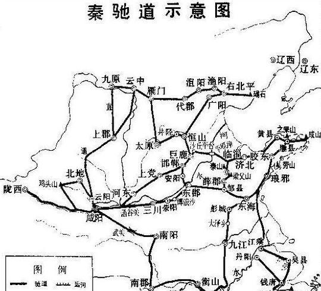

宋朝是中国古代建筑技术与理论并重的集大成时期。在唐代雄浑风格的基础上，宋代建筑转向精致典雅、富于理性，木构技艺登峰造极，并颁布了第一部官方建筑规范《营造法式》，标志着中国建筑进入高度模数化、标准化的成熟阶段。
注：基于历史文献记载与考古发现统计，反映出秦朝建筑活动的一个显著特点：民居与桥梁的建设规模尤为突出，这体现了秦统一后安置人口、巩固基层统治的迫切需求，以及为加强控制而大力发展全国交通网络的国家意志。
注：基于考古发现与文献记载分析，秦朝营造以木材与夯土为核心材料，木材广泛用于宫殿结构与战备设施，夯土则大规模应用于城墙、台基等防御与基础工程，砖瓦与石材在特定建筑中亦有重要应用。
点击任意卡片查看详细信息
秦都咸阳宫阙，规模宏大而规整，高台错落其间，甬道纵横相连，展现出以宫殿群统领广阔都城的营造思想，集中体现了秦代建筑的雄浑气象与威权意识。

秦朝修建的直道和驰道，是连接各地的重要交通干线，体现了秦朝强大的组织能力和工程水平。
秦长城是秦始皇为抵御北方游牧民族入侵而修建的军事防御工程，展现了秦朝强大的组织能力和工程水平。